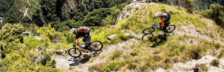

Sponsored Tours
The Glacier Ride - Glacier National Park, Montana & Waterton National Park, Canada
Below is a brief Tour Overview
| Day 1 | Bike 26 or 43 Miles We kick off the Glacier Ride with a beautiful afternoon warm-up bike ride along the Camas Road. This out and back bike ride includes a visit to the North Fork of the Flathead River, Apgar Village, and stunning Lake McDonald. |
| Day 2 | Bike 47 Miles Today begins with an early morning bike ride up the world-famous Going-to-the-Sun Road with a stop at Logan Pass before an epic downhill to our camp at St. Mary. Cyclists can stop at Jackson Glacier Overlook, Sunrift Gorge, Sun Point, and the Wild Goose Island viewpoint on the way down. |
| Day 3 | Bike 48 or 72 Miles Today we begin our bike ride in St. Mary and our ultimate destination is Waterton Lakes National Park. We follow the road along St. Mary Lake to Babb, Montana. Strong bike riders have the option to add 20 miles to their cycling route and pedal into Many Glacier for a view of Grinnell Point and the historic Many Glacier Hotel. We continue biking up to Chief Mountain Overlook to the U.S.–Canada Border at the Belly River. From there it’s a stunning bike ride into our camp next to Waterton Lake. |
| Day 4 | Hike, Bike or Rest Options Hike, bike or take a boat ride in a stunning alpine lake surrounded by peaks. Today is your day to explore Waterton and rest up before our big bike ride back to the U.S. In 1932, as war overtook Europe, the U.S. and Canada formed the world's first international peace park joining Glacier and Waterton in an agreement of goodwill. Glacier and Waterton now play a prominent role in global conservation. These parks are poised to play a greater role in bringing nations together while providing important research about climate change. |
| Day 5 | Bike 57 or 111 Miles We re-trace our bike ride to St. Mary enjoying a fresh take on stunning views and then continue along Hwy. 89 to East Glacier. The bike route includes a gorgeous climb up Looking Glass Pass and a side trip to the iconic Two Medicine Valley, treasured by the Blackfeet tribe. Your trip leaders will provide multiple options. If you'd like to achieve a century bike ride today, we can help make that happen! Tonight we camp at a Tipi Village in the ecotone between the Rocky Mountains and the great Prairie of Montana. |
| Day 6 | Whitewater Rafting Today we complete the loop of Glacier National Park by river. We'll crest the Continental Divide and paddle back to our starting point in West Glacier. Today’s whitewater rafting experience takes us along the Middle Fork of the Flathead River, an important and dynamic river system that forms the southern border of Glacier National Park. |